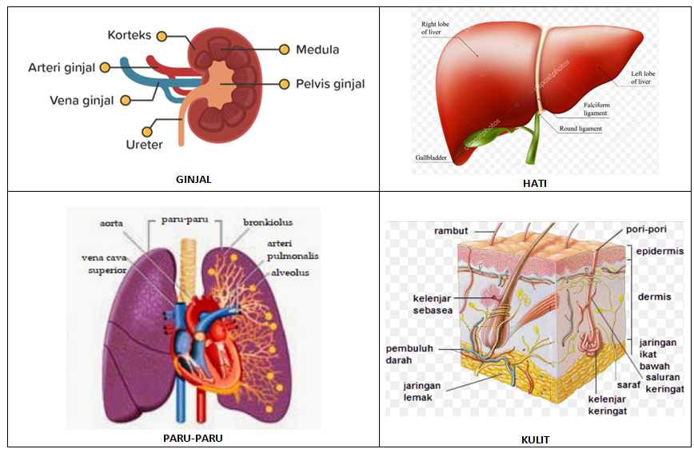

A. Pengertian Sistem Ekskresi
Sistem ekskresi adalah sistem organ yang berfungsi membuang zat-zat sisa metabolisme yang tidak diperlukan lagi oleh tubuh. Zat-zat sisa ini jika tidak dibuang akan menjadi racun dan mengganggu fungsi tubuh.
Penting untuk membedakan antara ekskresi, sekresi, dan defekasi:
- Ekskresi: Pembuangan zat sisa metabolisme (urea, CO₂, keringat, empedu)
- Sekresi: Pengeluaran zat yang masih berguna bagi tubuh (enzim, hormon)
- Defekasi: Pembuangan sisa pencernaan (feses) melalui anus
💡 Fakta Menarik
Ginjal manusia menyaring sekitar 180 liter darah per hari dan menghasilkan sekitar 1-2 liter urine. Itu berarti ginjal bekerja 24 jam tanpa henti untuk menjaga tubuh tetap sehat!
B. Organ-Organ Sistem Ekskresi
Manusia memiliki 4 organ utama yang berfungsi dalam sistem ekskresi:

Gambar 6.1: Organ-organ sistem ekskresi pada manusia — Ginjal, Kulit, Paru-paru, dan Hati
1. Ginjal (Ren)
Ginjal adalah organ ekskresi utama yang berbentuk seperti kacang merah, berjumlah 2 buah, terletak di rongga perut bagian belakang (kiri dan kanan tulang belakang). Ginjal berwarna merah kecoklatan dan berukuran sekitar 11 cm.
a. Struktur Ginjal
Ginjal terdiri dari tiga bagian utama:
- Korteks (Kulit Ginjal): Bagian terluar yang mengandung jutaan nefron (unit penyaring darah).
- Medula (Sumsum Ginjal): Bagian tengah yang berbentuk kerucut (piramida ginjal).
- Pelvis (Rongga Ginjal): Rongga yang menampung urine sebelum disalurkan ke ureter.
b. Nefron: Unit Penyaring Ginjal
Setiap ginjal memiliki sekitar 1 juta nefron. Nefron adalah unit fungsional terkecil ginjal yang bertugas menyaring darah. Nefron terdiri dari:
- Badan Malpighi: Terdiri dari Glomerulus (gumpalan kapiler darah) dan Kapsul Bowman (selaput pembungkus glomerulus).
- Tubulus Proksimal: Saluran berkelok-kelok setelah kapsul Bowman.
- Lengkung Henle: Saluran berbentuk huruf U.
- Tubulus Distal: Saluran berkelok-kelok sebelum menuju saluran pengumpul.
- Saluran Pengumpul (Duktus Kolektivus): Menampung urine dari beberapa nefron.
c. Proses Pembentukan Urine
Pembentukan urine terjadi dalam 3 tahap utama:
| Tahap | Proses | Tempat | Hasil |
|---|---|---|---|
| 1. Filtrasi (Penyaringan) | Darah disaring di glomerulus. Zat yang masih berguna (glukosa, asam amino) dan zat sisa (urea) lolos ke kapsul Bowman. | Glomerulus & Kapsul Bowman | Urine Primer (filtrat glomerulus) |
| 2. Reabsorpsi (Penyerapan Kembali) | Zat yang masih berguna (glukosa, asam amino, air, ion) diserap kembali ke dalam darah. | Tubulus Proksimal & Lengkung Henle | Urine Sekunder |
| 3. Augmentasi (Pengumpulan) | Penambahan zat-zat sisa yang tidak diperlukan lagi (urea, kreatinin, asam urat) ke dalam urine. | Tubulus Distal & Saluran Pengumpul | Urine Sesungguhnya |
d. Komposisi Urine Normal
- Air (95%)
- Urea (2%)
- Kreatinin
- Asam urat
- Garam-garam mineral (NaCl, KCl)
- Zat warna empedu (bilirubin, urobilin - memberi warna kuning)
2. Kulit (Integumen)
Kulit adalah organ ekskresi terbesar yang melindungi tubuh dari lingkungan luar. Kulit juga berfungsi sebagai alat ekskresi melalui kelenjar keringat.
a. Struktur Kulit
Kulit terdiri dari tiga lapisan utama:
| Lapisan | Nama Latin | Keterangan |
|---|---|---|
| Kulit Ari | Epidermis | Lapisan terluar, tipis, tidak memiliki pembuluh darah. Terdiri dari stratum korneum (sel mati), stratum lusidum, stratum granulosum, dan stratum germinativum. |
| Kulit Jangat | Dermis | Lapisan tengah yang tebal, mengandung kelenjar keringat, kelenjar minyak, pembuluh darah, saraf, dan akar rambut. |
| Jaringan Ikat Bawah Kulit | Subkutan/Hipodermis | Lapisan terdalam yang mengandung lemak sebagai cadangan energi dan isolator panas. |
b. Fungsi Kulit
- Alat Ekskresi: Mengeluarkan keringat (air, urea, garam mineral)
- Pelindung: Melindungi tubuh dari benturan, kuman, dan sinar UV
- Pengatur Suhu: Melalui penguapan keringat dan pelebaran/penyempitan pembuluh darah
- Indera Peraba: Memiliki reseptor untuk sentuhan, tekanan, suhu, dan nyeri
- Sintesis Vitamin D: Dengan bantuan sinar matahari
- Penyimpan Lemak: Sebagai cadangan energi
3. Paru-Paru (Pulmo) sebagai Organ Ekskresi
Selain berfungsi dalam sistem pernapasan, paru-paru juga berperan dalam sistem ekskresi dengan membuang karbon dioksida (CO₂) dan uap air (H₂O) sebagai zat sisa metabolisme seluler.
CO₂ diangkut oleh darah dari seluruh tubuh ke paru-paru, kemudian berdifusi dari darah ke alveolus dan dikeluarkan saat ekspirasi (menghembuskan napas).
🔄 Hubungan dengan Sistem Lain
CO₂ yang dibuang oleh paru-paru berasal dari proses respirasi seluler di mitokondria, di mana glukosa dipecah menggunakan O₂ untuk menghasilkan energi (ATP), dengan produk sampingan CO₂ dan H₂O.
4. Hati (Hepar) sebagai Organ Ekskresi
Hati adalah kelenjar terbesar dalam tubuh manusia (berat ±1,5 kg), terletak di rongga perut sebelah kanan atas, di bawah diafragma. Hati berwarna merah kecoklatan.
a. Fungsi Hati dalam Ekskresi
- Menghasilkan Empedu: Empedu mengandung bilirubin dan biliverdin (zat warna empedu) yang merupakan hasil perombakan sel darah merah yang sudah tua. Empedu disalurkan ke usus halus dan akhirnya dibuang melalui feses (memberi warna coklat pada feses) dan urine (memberi warna kuning).
- Mengubah Amonia menjadi Urea: Amonia (NH₃) adalah zat beracun hasil metabolisme protein. Hati mengubah amonia menjadi urea yang kurang beracun, kemudian urea dibuang melalui ginjal.
b. Fungsi Lain Hati
- Menyimpan glikogen (cadangan gula)
- Menetralisir racun (detoksifikasi)
- Membentuk protein darah (albumin, fibrinogen)
- Menyimpan vitamin A, D, E, K, dan B12
- Menghasilkan empedu untuk mengemulsikan lemak
- Mengatur kadar gula darah
C. Gangguan dan Penyakit pada Sistem Ekskresi
| Penyakit | Penyebab / Keterangan |
|---|---|
| Batu Ginjal (Nefrolitiasis) | Endapan kristal kalsium atau asam urat di ginjal. Gejala: nyeri hebat di pinggang, sulit buang air kecil. |
| Gagal Ginjal | Ginjal tidak mampu menyaring darah dengan baik. Dapat disebabkan oleh diabetes, hipertensi, atau infeksi. |
| Nefritis | Peradangan pada nefron akibat infeksi bakteri. Dapat menyebabkan kebocoran protein dalam urine. |
| Albuminuria | Urine mengandung protein (albumin) akibat kerusakan glomerulus. |
| Diabetes Insipidus | Produksi urine berlebihan akibat kekurangan hormon ADH (Anti-Diuretic Hormone). |
| Hematuria | Urine mengandung darah akibat kerusakan glomerulus atau infeksi. |
| Jerawat (Akne) | Peradangan kelenjar minyak di kulit. |
| Kudis (Scabies) | Infeksi tungau Sarcoptes scabiei di kulit. |
| Hepatitis | Peradangan hati akibat virus (Hepatitis A, B, C). |
| Sirosis | Kerusakan jaringan hati akibat alkohol atau hepatitis kronis. |
D. Teknologi Terkait Sistem Ekskresi
1. Cuci Darah (Hemodialisis)
Hemodialisis adalah prosedur medis untuk menyaring darah pada penderita gagal ginjal. Darah dialirkan ke mesin dialisis yang berfungsi seperti ginjal buatan, menyaring zat-zat sisa dan kelebihan cairan, kemudian darah bersih dikembalikan ke tubuh.
2. Transplantasi Ginjal
Transplantasi ginjal adalah operasi pencangkokan ginjal sehat dari donor ke penderita gagal ginjal. Donor bisa dari orang hidup (keluarga) atau dari orang yang sudah meninggal (donor cadaver).
3. Cangkok Kulit
Cangkok kulit dilakukan pada penderita luka bakar berat. Kulit sehat dari bagian tubuh lain atau dari donor dicangkokkan untuk menutupi area yang rusak.
E. Cara Menjaga Kesehatan Sistem Ekskresi
💡 Tips Sistem Ekskresi Sehat
- Minum air putih yang cukup (minimal 8 gelas/hari) untuk membantu ginjal menyaring zat sisa
- Jangan menahan buang air kecil terlalu lama untuk mencegah infeksi saluran kemih
- Kurangi makanan asin dan berlemak untuk mencegah batu ginjal dan hipertensi
- Olahraga teratur untuk melancarkan sirkulasi darah dan keringat
- Jaga kebersihan kulit dengan mandi teratur dan menggunakan pakaian bersih
- Hindari alkohol dan narkoba yang dapat merusak hati dan ginjal
- Konsumsi makanan berserat untuk membantu proses ekskresi
- Periksakan kesehatan secara rutin untuk deteksi dini gangguan ginjal dan hati
F. Rangkuman
- Sistem ekskresi berfungsi membuang zat sisa metabolisme (urea, CO₂, keringat, empedu).
- Organ ekskresi manusia: Ginjal, Kulit, Paru-paru, dan Hati.
- Ginjal menyaring darah melalui 3 tahap: Filtrasi → Reabsorpsi → Augmentasi.
- Nefron adalah unit fungsional ginjal, setiap ginjal memiliki ±1 juta nefron.
- Kulit mengeluarkan keringat (air, urea, garam) melalui kelenjar keringat di dermis.
- Paru-paru mengekskresikan CO₂ dan uap air sebagai sisa respirasi seluler.
- Hati menghasilkan empedu (bilirubin) dan mengubah amonia menjadi urea.
- Gagal ginjal dapat ditangani dengan hemodialisis (cuci darah) atau transplantasi ginjal.
G. Latihan Soal
A. Pilihan Ganda
- Organ ekskresi utama yang berfungsi menyaring darah dan menghasilkan urine adalah...
- a. Hati
- b. Paru-paru
- c. Ginjal
- d. Kulit
- Unit penyaring terkecil di dalam ginjal disebut...
- a. Glomerulus
- b. Nefron
- c. Ureter
- d. Kapsul Bowman
- Tahap pembentukan urine di mana zat-zat yang masih berguna (glukosa, asam amino) diserap kembali ke darah disebut...
- a. Filtrasi
- b. Reabsorpsi
- c. Augmentasi
- d. Defekasi
- Lapisan kulit yang mengandung kelenjar keringat dan kelenjar minyak adalah...
- a. Epidermis
- b. Dermis
- c. Subkutan
- d. Stratum korneum
- Organ yang berfungsi mengubah amonia (zat beracun) menjadi urea adalah...
- a. Ginjal
- b. Paru-paru
- c. Hati
- d. Kulit
B. Essay
- Sebutkan 4 organ ekskresi pada manusia dan zat apa yang dibuang oleh masing-masing organ!
- Jelaskan 3 tahap pembentukan urine (filtrasi, reabsorpsi, augmentasi) beserta tempat terjadinya!
- Mengapa paru-paru dan hati juga termasuk organ ekskresi? Jelaskan!
- Sebutkan 3 fungsi kulit selain sebagai alat ekskresi!
- Jelaskan apa yang dimaksud dengan hemodialisis dan kapan prosedur ini diperlukan!